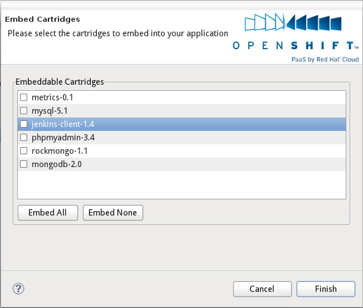
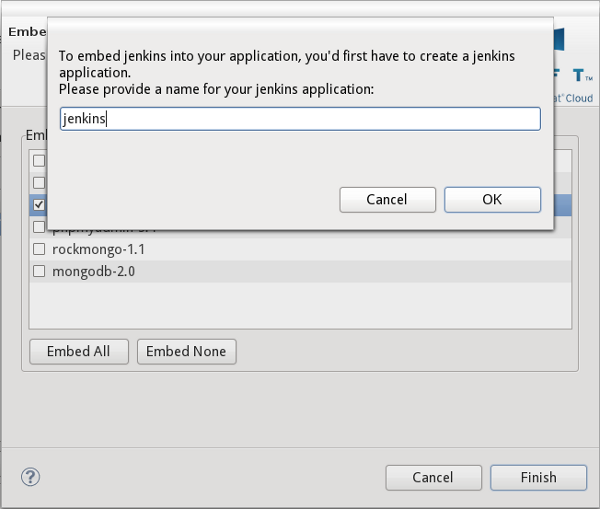
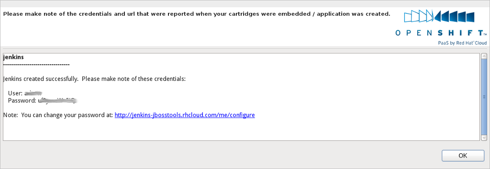
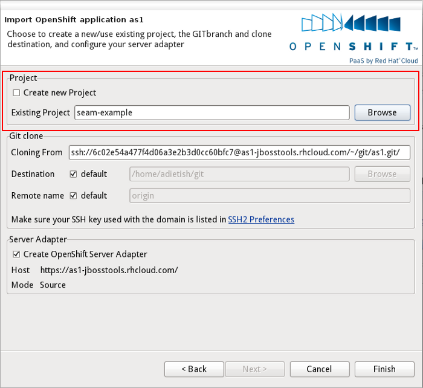
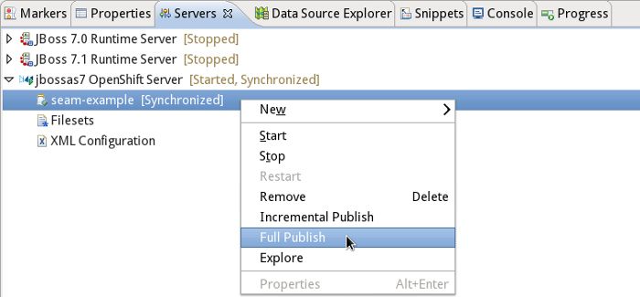
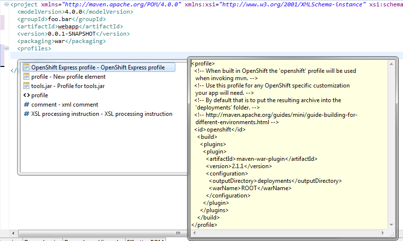

OpenShift Express Application Wizard |
|
| Embed Cartridges |
The OpenShift Express Application wizard now allows you to embed cartridges to your OpenShift application.
Cartridges add capabilities to your application. A typical usecase is to add a mysql database.
You allow your application to use a mysql database by embedding the mysql cartridge to it.
The OpenShift Express Application wizard will list all available cartridges and allow you to add/remove cartridges at will.
 |
|
|
|
| Embed Jenkins |
An even more exciting use case is to embed jenkins to your OpenShift application. That will turn OpenShift into an Continous Integration server.
Anytime you push changes to OpenShift, a jenkins CI server will build your application.
Our wizard allows you to embed the jenkins client. It will verify behind the scenes that you already have a jenkins application and
prompt you to create one if you haven't yet.
 Credentials and url of your new jenkins instance will get reported to you accordingly. |
|
|
|
| Push Existing Projects |
The OpenShift Express Application wizard in M4 allowed you to import the demo application (that the OpenShift PaaS creates initially) to your workspace.
It was then up to you to merge the demo with your own application and push things to the OpenShift PaaS. Our tooling did not assist you in that case.
In M5 we now allow you to push your own application directly. Just uncheck "Create New Project" and choose the project from your workspace, that you want to
publish to OpenShift. The wizard will then copy OpenShift configurations and enable git on it. You'll then be able to manually push it to OpenShift
or let our Server Adapter do that job for you.
 |
|
|
|
| OpenShift server adapter |
We also offer you an Eclipse WTP compliant OpenShift Server adapter that allows you to publish applications to OpenShift.
The server adapter is created when you finish the OpenShift Express Application wizard. We already offered that server adapter in M4.
We now turned it into its own distinct server type and made it work even more seamlessly.
 |
OpenShift Express REST client |
|
| REST Client |
We developed a client for the OpenShift Express REST service in M4. It pretty much offers all features that
are currently available in the rhc-* command line tools (create/rename a domain, create/destroy applications,
list all existing applications, available cartridges, read the application log, embed cartridges etc.). We moved it to github and joined forces with the OpenShift team. The official client is now maintained at https://github.com/bdecoste/openshift-java-client |
Maven pom.xml editor |
|
| New OpenShift Express profile template |
If you want to deploy your Web application to OpenShift Express, you will need to define an openshift maven profile.
It basically configures the maven build to generate a ROOT.war archive in the deployments folder of your project.
In the pom.xml editor, create a <profiles> section if it doesn't exist and press CTRL+<space> to trigger auto-completion, an OpenShift Express Maven profile template is now available :  Press enter to select and insert the openshift profile in your pom.xml. |